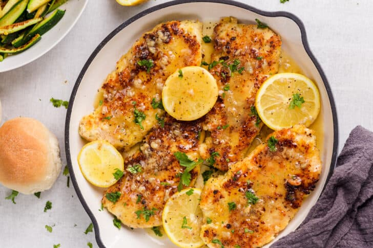

Lemon Chicken

Saucy delight!
This is a recipe that I like to meal prep and bring to work!
Ingredients
Ingredients for Parmesan Crusted Chicken:
- 1 1/2 lb chicken breast, (2 large), patted dry with paper towels
- 1 Tbsp olive oil , to sautee
- 1 Tbsp parsley, to garnish (optional)
- 1/2 lemon, sliced for garnish (optional)
For the Egg Mixture:
- 2 large eggs
- 1 garlic clove, minced
- 1/2 tsp Italian seasoning
- 1/2 tsp salt
- 1/4 tsp ground black pepper
For the Parmesan Breading Mixture:
- 1 cup Parmesan cheese, grated
- 3 Tbsp all-purpose flour
Ingredients for Lemon Butter Sauce:
- 8 Tbsp unsalted butter
- 2 garlic cloves, minced
- 1/4 cup lemon juice
- 1/4 cup chicken broth
- 1/4 tsp ground black pepper
Steps
- Cut the chicken breasts in half lengthwise. Lightly beat with a meat mallet until even in thickness.
- In a bowl, whisk together the ingredients for the egg mixture. In another bowl, combine the ingredients for the parmesan mixture. Dip chicken into the egg mixture, then dredge chicken in the parmesan mixture. Allow any excess ingredients to fall off from each bowl.
- In a large skillet, heat enough oil to cover the bottom of a skillet. Once hot, add the chicken and cook 4-5 minutes per side, or until crispy, golden and cooked through to 165˚F on an Instant Read Thermometer. Reduce the heat if chicken browns too quickly.
- Meanwhile, in a separate saucepan, melt butter and garlic, cook until fragrant. Add the chicken broth, lemon juice and pepper. Allow the sauce to cook for about 2 minutes. Pour the sauce over the cooked chicken, turning to coat. Garnish with lemon slices and finely chopped parsley if desired.
Recipe Notes
Adapted from this recipe, which was adapted from this recipe.
Try Dixie Fry instead of parmesean crust.
Return to recipe list.